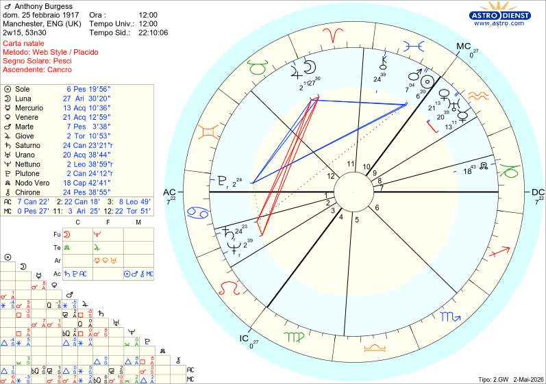

Il cielo racconta
Anthony Burgess
Manchester, 25 febbraio 1917
⚙️TEMA NATALE DI ANTHONY BURGESS
NATO IL 25/02/1917 A MANCHESTER
ALLE ORE 12:00
PESCI ASCENDENTE CANCRO

Anthony Burgess: il Cielo di "Arancia Meccanica" e le Ferite Scritte tra le Stelle
Anthony Burgess è stato uno dei geni più eclettici e folli del Novecento: scrittore, saggista, compositore e creatore di lingue artificiali. Il mondo lo ha celebrato grazie al capolavoro visionario di Stanley Kubrick, Arancia Meccanica, tratto dal suo omonimo romanzo. Un'opera intrisa di violenza, libero arbitrio e scontro con il potere.
Ma dietro questa mente fantascientifica e anticonformista si nascondeva un uomo segnato da tragedie personali indicibili. La cosa che ti lascerà a bocca aperta? Il suo cielo natale aveva già previsto sia le sue ferite più sanguinose sia la nascita del suo distopico capolavoro.
1. La ferita dell'abbandono: una mappa senza radici
Burgess visse quasi tutta la vita in esilio volontario (Malta, Brunei, Roma, Monaco), incapace di mettere radici. Perché?
La firma delle stelle: Nel suo tema natale, quasi tutti i pianeti si trovano nell'emisfero superiore, il settore dell'autonomia e del distacco dalle origini. La Quarta Casa (la famiglia) è occupata dalla fredda Vergine.
Il segreto stupefacente: La sua Luna (il bisogno di calore e la madre) subisce una quadratura micidiale da Saturno (la privazione) posizionato nel segno del Cancro (il nutrimento materno). Il cielo ha letteralmente fotografato la sua infanzia: la madre e la sorella morirono di influenza spagnola quando lui aveva un anno, e il padre lo abbandonò affidandolo a una zia. Un deserto emotivo totale.
2. La profezia di "Arancia Meccanica": la violenza scritta nel cielo
L'ispirazione per la brutale violenza di Arancia Meccanica arrivò da un dramma reale: durante la Seconda Guerra Mondiale, la prima moglie di Burgess fu aggredita, violentata da disertori americani a Londra e perse il bambino che aspettava.
La precisione da brividi: Nel tema di Burgess, la Luna in Ariete (la donna, la gravidanza) è ferita a morte da Saturno in Cancro (il potere distruttivo sulla carne) e da Nettuno in Leone (l'atto sessuale che annienta la psiche).
I pianeti si trovavano nella Seconda Casa, il settore del territorio personale. Il cielo aveva tristemente previsto questa devastante e violenta invasione della sua sfera più intima.
3. Urano in Acquario: la nascita del "Nadsat"
Come ha fatto Burgess a inventare dal nulla il Nadsat, lo slang artificiale (misto di inglese e russo) parlato dai drughi in Arancia Meccanica?
La risposta è un cortocircuito geniale in Nona Casa (il linguaggio): Mercurio (la parola) è fuso a Urano (la rivoluzione, l'invenzione) nel segno ultra-tecnologico e futuristico dell'Acquario. Questo aspetto crea una mente aliena, capace di scardinare le regole della linguistica e inventare idiomi mai esistiti prima.
4. Il Libero Arbitrio contro il lavaggio del cervello
Il cuore di Arancia Meccanica è una domanda filosofica scomoda: è meglio un uomo che sceglie il male o un uomo a cui lo Stato impone il bene con la forza? Burgess difende ferocemente la libertà di scelta, anche quando fa paura.
Questa totale indipendenza mentale è firmata dalla congiunzione di Mercurio Urano e Venere in nona casa ed in Acquario. L'Acquario detesta le imposizioni e il controllo sociale: Burgess ha usato i suoi pianeti per scagliarsi contro lo Stato che trasforma l'essere umano in un automa (un'arancia a orologeria, appunto).
5. Cinque romanzi in un anno: la sfida alla morte
Nel 1959, i medici diagnosticarono a Burgess un tumore al cervello (rivelatosi poi inesistente) dandogli pochi mesi di vita. La sua reazione? Scrisse ben 5 romanzi in un solo anno per lasciare i diritti d'autore alla moglie e non farla morire di fame.
Il colpo di scena finale: Questa determinazione sovrumana arriva dal Sole congiunto a Marte in Pesci (creatività inarrestabile sotto pressione) in trigono perfetto a Plutone in Dodicesima Casa (la capacità di risorgere dagli abissi). Con una sentenza di morte in testa, il Sole ha attivato la Terza Casa (in Leone, la scrittura), trasformando il terrore della fine in puro fuoco creativo.
🌟 Il verdetto delle stelle
Anthony Burgess ha preso le sue ferite più spaventose — l'abbandono, la violenza subita dalla moglie, lo spettro della morte — e le ha digerite attraverso il filtro di Plutone in Dodicesima Casa. L'astrologia ci dimostra che il suo genio non è nato nonostante il dolore, ma grazie a esso. Il cielo lo ha privato di un nido tranquillo per dargli le ali di un visionario immortale.
Non è sconvolgente vedere come la violenza della trama di Arancia Meccanica rispecchiasse così fedelmente la durissima quadratura tra la Luna e Saturno nel suo tema natale?